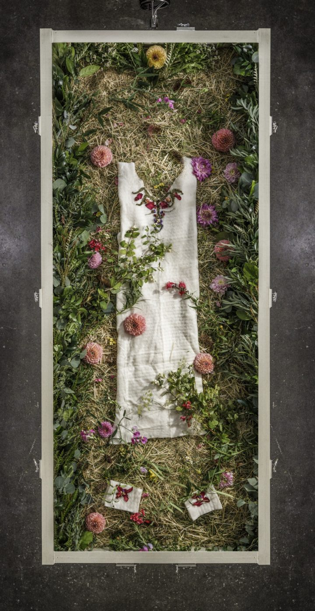
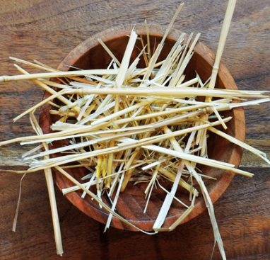
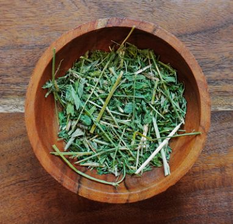
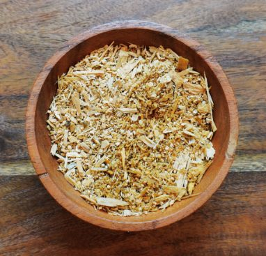
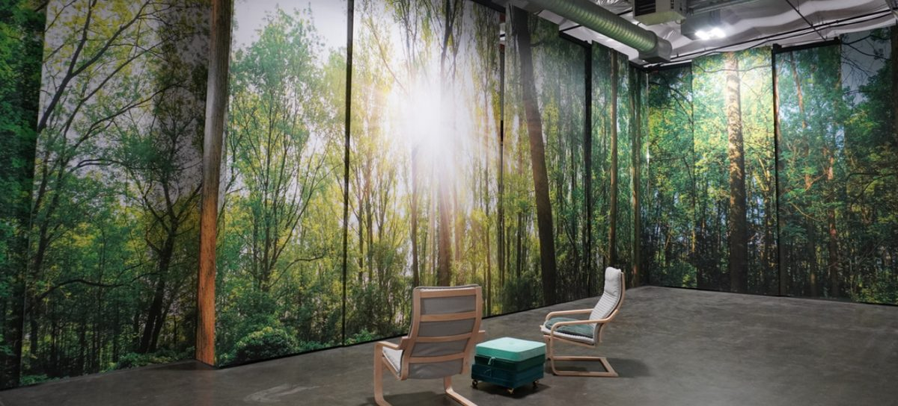
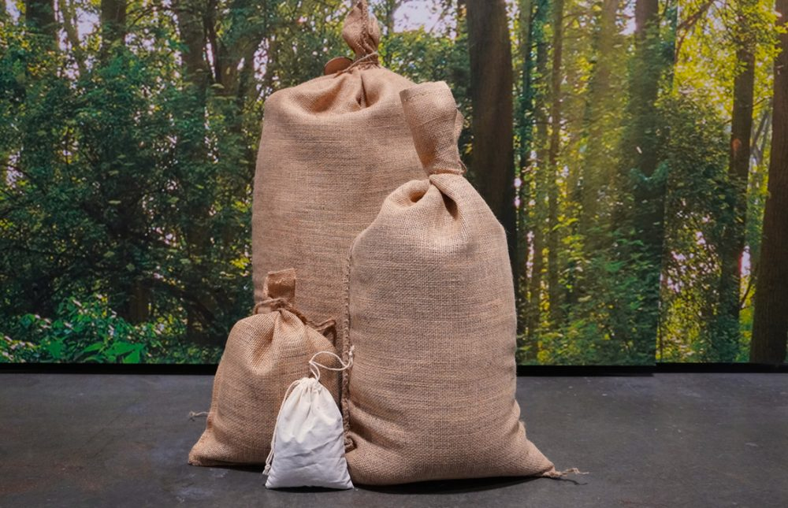

Terramation
What Terramation Is
Terramation gently transforms a person into soil. It is the word Bonney Watson uses, and it is the word on our price list. The legal name in Washington is natural organic reduction, and you will also hear it called human composting in the news. All three describe the same process. Washington law defines it in a single sentence: “the contained, accelerated conversion of human remains to soil” (RCW 68.04.310).
What comes back to the family is soil, not ashes, not cremated remains. It is clean, fertile and ready to be planted in, scattered, or placed at the cemetery.
We provide terramation through Return Home, a licensed funeral home and terramation facility in Auburn, Washington, and a preferred partner of Bonney Watson. You make the arrangements with us; the transformation itself takes place at their facility. Their staff and ours have done this together many times.
Nothing is added to change the body. Only three organic materials go into the vessel (straw, alfalfa and sawdust) along with the oxygen that flows through it. Return Home uses no chemicals and no inoculants.
On the environment, plainly. Terramation does not burn fossil fuel to reach and hold the temperatures a cremation requires, and what it produces at the end is usable soil rather than exhaust. That is a real difference, and it is the honest version of it. If a specific number matters to you, ask us and we will tell you where the figure came from rather than repeating one.
How the Process Works

- In our careBonney Watson brings your loved one into our care and bathes and dresses them here, in a compostable garment called a Wisp, hand-made for each person from soft pressed organic cotton, with matching booties. We then take them to Return Home in Auburn.
- Laid in the vesselThey are placed in a sealed, environmentally controlled vessel on a bed of straw, alfalfa and sawdust. If your family is holding a laying-in ceremony, this is when it happens (Section 3).
- Transformation, about 30 daysOxygen flows steadily through the vessel and out through a filtered air system before it returns to the outside. The airflow makes the body's own microbes highly active, and they do the work. Nothing is added to speed it along.
- ScreeningThe material is screened to take out anything that is not organic (pacemakers and other medical implants, dental fillings), and those devices are recycled responsibly. Any bone remaining at this point is reduced to small shards, roughly an eighth of an inch, much as it would be after a cremation, and returned to the soil.
- Resting, about another 30 daysThe screened soil rests and cools in a curing cube. It finishes as a stable, fertile soil.
- Returned to youAll told, expect about two months. We will keep you posted on the timing rather than promising a date in advance, because the process is watched and allowed to finish rather than run on a clock.



The Laying-In Ceremony
A laying-in ceremony is the terramation equivalent of a viewing. Your loved one lies in their vessel, in the Wisp, on the bed of organics, and the family gathers around it to say goodbye. It can be attended in person, virtually, or both. The ceremony includes a live webcast and a video tribute.
You decide what goes in and on the vessel. Families are encouraged to place anything organic inside it: flowers, food, letters. The outside can be decorated too. Children are welcome to take an active part, and often do; placing a flower or a drawing gives a child something to do at a moment when there is otherwise nothing.
Anyone may lead the service. Clergy of any faith are welcome to lead a laying-in ceremony, and many have. So is a family member, if that is what you would rather.
The vessel is the real one. In Return Home's own words: “We don't use facades or temporary vessels during the laying-in ceremony. The vessel you see is where your loved one will stay.”
You can come back during the first 30 days. Vessels are kept in a public area of the facility, not behind a door, and families are welcome to visit during business hours while their person is resting there, to sit alongside the vessel for a while, as often as they want.

The Laying in Ceremony is priced separately from the terramation itself; see Section 6. It is optional; families who do not hold one still say goodbye with us in the ways they would for any other arrangement.
Receiving the Soil
There is more of it than most families expect. A full return is roughly one cubic yard, about 250 pounds, delivered in 10 to 15 burlap bags. Burlap because it is natural and lets the soil breathe. It is worth picturing that volume before you decide, because it is a real amount of material to carry, store and place.
The bags come in sizes and you choose the mix. A large bag holds around 20 pounds; there are medium and small bags, and a mini bag holding a large handful, which is the size families most often want for a keepsake, or to give to each of several relatives. You may take the whole amount, a portion of it, or none of it.
Each bag is tied with a hand-drawn name tag carrying your loved one's full name and their birth and death dates.

Getting it to you. You may collect the soil, or have it shipped or delivered anywhere in the United States or Canada. Charges may apply for shipping.
Where the Soil May Go
Washington treats terramated soil much as it treats cremated remains. State law (RCW 68.50.130) allows the disposition of remains following natural organic reduction in cemeteries, in family burial grounds and in dedicated religious buildings; on private property with the consent of the property owner; and on public or government land or water with the approval of the agency responsible for it.
In practice that means permission is the rule. Your own garden is yours to plant. Anywhere else, whether it is a friend's land, a park or a stretch of forest, ask first.
Families do lovely things with it. A memorial bed. A tree planted where everyone can see it. A portion carried somewhere that mattered to the person, and the rest kept close to home.
Terramated remains can be placed at Washington Memorial Park, in a standard-size plot. That gives your family a permanent, cared-for place with a name on it, somewhere friends and family can visit any time, which is the one thing scattering on private land cannot give you back later. Your family service director will walk you through what is available, what it costs, and how much of the soil you would place; ask us and we will set aside the time.
What It Costs
Terramation
This charge includes the Basic Services of Funeral Director and Staff, Transfer of the deceased to the funeral home, bathing of the deceased, Natural Organic Reduction through a third-party, and Use of a utility vehicle. This charge does not include the use of staff and facilities for any public or private visitation or ceremony.
Laying in Ceremony
This charge includes a Video Tribute, Live Webcast of Ceremony, and two hours' Use of Return Home Facility and Staff for ceremony and in-person goodbye.
What these two charges do not cover. They cover the terramation and, if you choose it, the ceremony. Cemetery property, placement at Washington Memorial Park, a memorial marker, certified death certificates and shipping of the soil are all priced separately. Ask us for a written quote covering everything you are actually considering, rather than working from these two lines alone.
Both figures are taken verbatim from the Bonney Watson General Price List effective April 2026, where terramation appears under Alternative Methods of Disposition. Prices are subject to change without notice. The complete price list is available from us and on the guides page.
Where a particular one falls in that range depends on the size, the location and the options you choose. I would rather give you a real number than a guess. Call or email me and I will put an exact quote in writing for you, with no obligation.
Practical Matters
Who can be terramated. Nearly everyone. A small number of medical circumstances rule it out, and a person who has been embalmed cannot be terramated. Rather than print a list that could be out of date by the time you read it, we check with Return Home directly before anything is arranged. Tell your family service director what you know about the medical history and we will confirm it for you.
Planning ahead. Families do ask about arranging terramation in advance, and it is a fair question to bring us. Start with a family service director, who can tell you exactly what we are able to put in place today and what it would cost, so that nothing is promised on paper that would not hold.
How it became legal. Washington was the first state in the United States to legalize natural organic reduction. Senate Bill 5001 was signed by Governor Jay Inslee in May 2019 and took effect on May 1, 2020. It passed with votes from both parties. Several other states have legalized it since, and more are considering it.
Common Questions
What is terramation, in one sentence?
Terramation is the act of gently and naturally transforming human remains into soil.
Is this the same thing as human composting?
Yes. Terramation, natural organic reduction and human composting all describe the same process. “Natural organic reduction” is the legal term you will see on the paperwork and on our price list; “human composting” is what most news coverage calls it; terramation is the word we and Return Home use. If you have read about one, you have read about all three.
How long does it take?
About two months: roughly 30 days in the vessel, then about another 30 days of resting and cooling. We would rather give you that as an approximation than a date, because the process is allowed to finish properly.
How much soil is there, and do we have to take all of it?
About one cubic yard, roughly 250 pounds, in 10 to 15 burlap bags. You may take all of it, some of it, or none of it. Anything you do not take is scattered at Return Home's Woodland at no additional charge, though the Woodland is not open for visits, so if you want somewhere to go back to, ask us about the cemetery instead.
Can family and friends be there?
Yes, in two ways. There is the laying-in ceremony, which can be attended in person or watched live from anywhere. And for the first 30 days, while your loved one is resting in the vessel, families are welcome to visit during business hours and sit with them.
Can the soil be placed at the cemetery?
Yes. Terramated remains can be placed at Washington Memorial Park in a standard-size plot. Your family service director will go through the specifics with you: what is available, what it costs, and how much of the soil you would place.
Is the soil safe to handle and to plant in?
Washington regulates this rather than leaving it to the provider. Before soil can be released it must pass pathogen testing and must contain less than 0.01 mg per kilogram dry weight of physical contaminants, which includes intact bone, dental fillings and medical implants (WAC 246-500-055). It comes back as clean, fertile soil, and families plant in it.
Is there anyone who cannot be terramated?
A few situations rule it out: certain rare illnesses, and prior embalming. It is a short list and it does not apply to most people. We confirm eligibility with Return Home before anything is arranged, so no family is left to find out late.
Where does this actually happen?
At Return Home's facility in Auburn, Washington, a licensed funeral home and terramation center and a preferred partner of Bonney Watson. You make all of your arrangements with us.